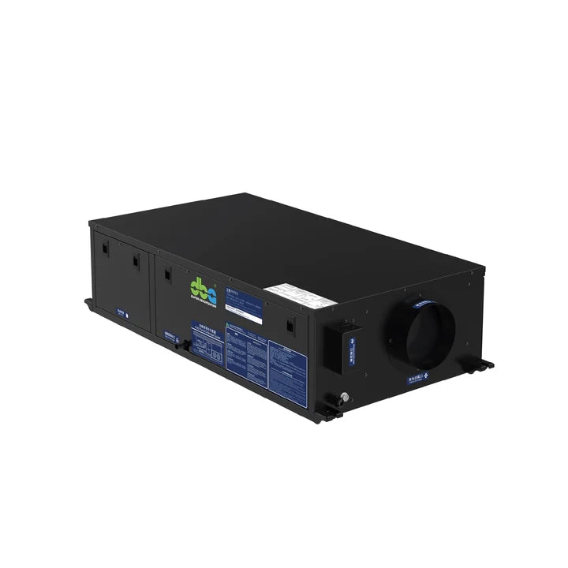
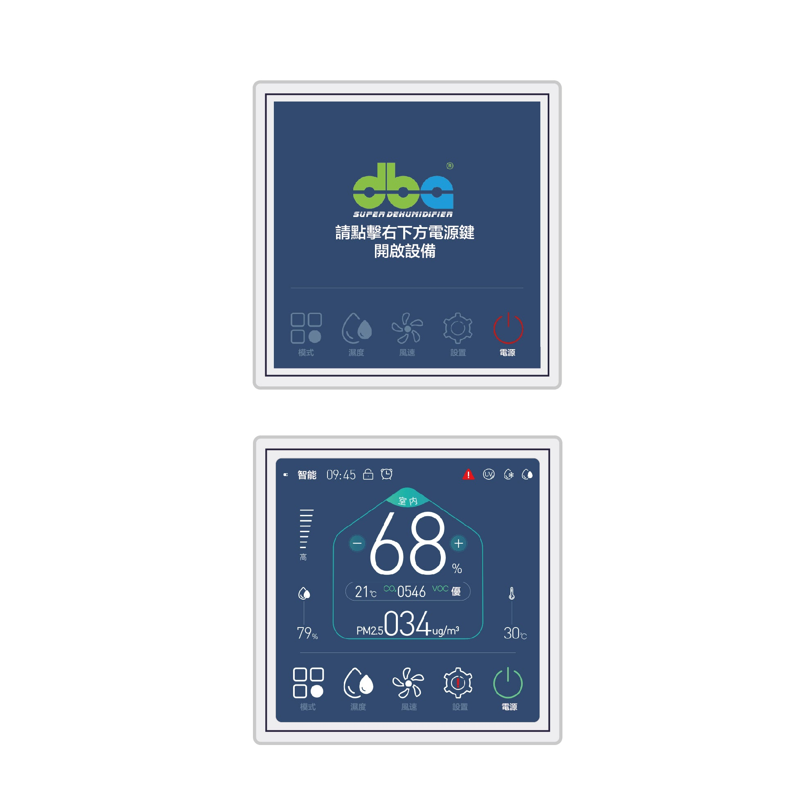

新風淨化抽濕機與傳統抽濕機之比較。 Fresh-air dehumidifier vs traditional dehumidifier.
傳統抽濕機僅就室內既有空氣進行除濕處理;新風淨化抽濕機則於除濕之同時,引入經過 HEPA 過濾與紫外線殺菌之室外新鮮空氣。表面看來前者已能滿足基本需求,惟考慮到香港現代住宅之高度氣密化,實際選型考量並非如此簡單。 A traditional dehumidifier conditions the air already in the room. A fresh-air dehumidifier dries the room and brings in filtered, sterilised outside air. The first sounds enough — until you consider how airtight a typical HK flat actually is.

兩者之根本差異
傳統抽濕機(如 DBA-UTC、GEC 系列)之運作原理為:自室內吸入潮濕空氣,使水蒸氣於冷凝器表面凝結成液態水並予以排放,繼而將乾燥空氣送回室內。此類設備持續處理室內既有空氣,惟自始至終不引入任何新鮮空氣。
新風淨化抽濕機(DBA GEC V 系列)則同時執行兩項任務:一方面處理回風(進行室內循環除濕),另一方面獨立引入經 HEPA 濾網過濾之室外新鮮空氣,並依據室內 CO₂、PM2.5、VOC、溫度與濕度之即時數值,自動調節新風閥之開度。本系列具備四種運作模式:純除濕、純新風、混合運作、以及智能自動。
香港為何需要新風系統?
近二十年間,香港新建住宅、會所及商業樓宇之氣密性大幅提升 — 雙層玻璃幕牆、密封式門窗及隔音門廣泛採用。氣密度雖高,惟室內 CO₂ 濃度亦因此容易累積:以四人家庭為例,若整夜緊閉門窗,清晨時段室內 CO₂ 可達 1,500 至 2,500 ppm,遠超 ASHRAE 建議之 1,000 ppm 舒適標準。長期處於此環境下,將導致睡眠品質下降、晨起頭痛,以及長遠之專注力減退。
傳統抽濕機僅能解決濕度問題,對 CO₂ 累積無能為力。欲降低室內 CO₂ 濃度,唯一途徑為引入新鮮空氣。新風淨化抽濕機正好同時兼顧此兩項功能。
香港 PM2.5 水平與空氣過濾
香港 PM2.5 年均濃度約為 17 至 22 µg/m³,旺角等人口密集地區則更為偏高。新風機所配備之 H13 級 HEPA 濾網可過濾 99.95% 之 0.3 µm 微粒,意即經過濾後送入室內之新鮮空氣,實際清潔度高於室外空氣。對於患有哮喘、過敏症,或家中有嬰幼兒及長者之家庭而言,此項功能之重要性甚至超越除濕本身。

何種情況下傳統抽濕機已能滿足需求?
- 經常開啟窗戶之舊式樓宇單位 — 自然通風已能解決 CO₂ 累積問題,僅需單純之除濕功能
- 假天花淨空不足,無法容納 GEC V 系列所需之 280 mm 機身高度
- 地下單位或無外牆可供接駁新風管之空間
- 預算有限,僅需入門級基本安裝之項目
何種情況下應選用新風一體機?
- 新建之高氣密性住宅或會所
- 家中有嬰幼兒、長者,或患有哮喘、過敏症之成員
- 長期關窗開啟空調,需顧及室內 CO₂ 累積問題
- 單位面向繁忙街道 — 開窗即吸入廢氣,新風機可自動過濾
- 會所、酒店大堂等人流量較高之公共空間
機型選用建議
200 至 400 平方呎建議採用 GEC30V;400 至 600 平方呎建議 GEC50V;600 至 800 平方呎建議 GEC70V;800 至 1,200 平方呎建議 GEC110V。如需更完整之室內空氣管理,可配合 THC 系列恆溫恆濕氣候控制機共同使用。
如對閣下單位適用之機型有任何疑問,歡迎填寫查詢表單,本公司將安排專人現場勘察並提供詳細選型建議。
The fundamental difference
A traditional dehumidifier (DBA-UTC, GEC, etc.) takes air from the room, condenses moisture on a cold coil, drains it, and returns dry air to the room. It recirculates indoor air indefinitely. It never brings in anything new.
A fresh-air dehumidifier (DBA's GEC V range) does both jobs at once: one side dehumidifies the recirculated indoor stream; the other side draws in outside air through a HEPA filter and modulates the fresh-air damper based on indoor CO₂, PM2.5, VOC, temperature, and humidity. Four modes — dehumidify, fresh-air, mixed, intelligent — each tuned to a different time of day.
Why Hong Kong needs fresh air
HK residential and commercial buildings constructed in the last 20 years are airtight by design — double-glazed curtain walls, sealed window frames, acoustic-rated doors. The trade-off is that indoor CO₂ rises fast. A four-person household with windows closed overnight commonly hits 1,500–2,500 ppm by morning, well above ASHRAE's 1,000 ppm comfort guideline. The symptoms are poor sleep quality, morning headaches, and over time, reduced concentration.
A traditional dehumidifier fixes humidity but not CO₂. Lowering CO₂ requires fresh air. A fresh-air dehumidifier handles both in one chassis.
HK air quality and filtration
HK's annual average PM2.5 sits around 17–22 µg/m³ — higher in Mong Kok and similar dense areas. The fresh-air dehumidifier's H13 HEPA filter removes 99.95% of 0.3 μm particles, so the air delivered indoors is cleaner than the air outside. For households with infants, elderly, asthmatics, or allergy sufferers, this matters more than the dehumidification itself.
When a traditional dehumidifier is enough
- Older flats with windows open regularly — natural ventilation handles CO₂
- Ceilings too low for the 280 mm GEC V form factor
- Basement or interior units with no path to outside air
- Budget installs where a UTC or GEC ceiling unit is the right scope
When the fresh-air system is worth it
- New-construction airtight residences and clubhouses
- Households with infants, elderly, asthmatics, or allergy sufferers
- Long aircon hours with windows closed
- Apartments facing busy roads — opening the window means inhaling exhaust; the fresh-air unit filters it first
- Clubhouses, hotel lobbies, and other high-occupancy spaces
Sizing guide
200–400 sq ft → GEC30V. 400–600 sq ft → GEC50V. 600–800 sq ft → GEC70V. 800–1,200 sq ft → GEC110V. Pair with the THC series for full climate management in one system.
Wondering which fits your unit? Drop us a brief — we will survey on site and recommend.
項目諮詢Project enquiry
新風淨化系統是否適合閣下之單位?Is the fresh-air system right for your flat?
本公司可安排上門勘察,並提供詳細之系統建議。We survey on site and recommend.
免費諮詢Request a quote